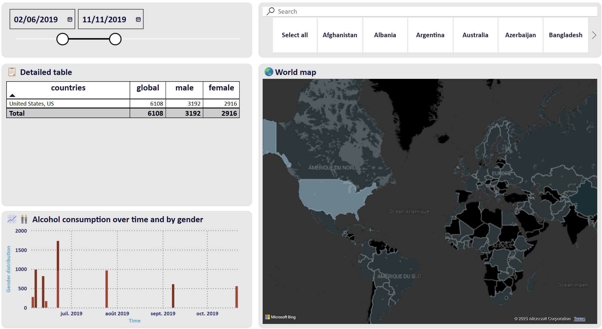
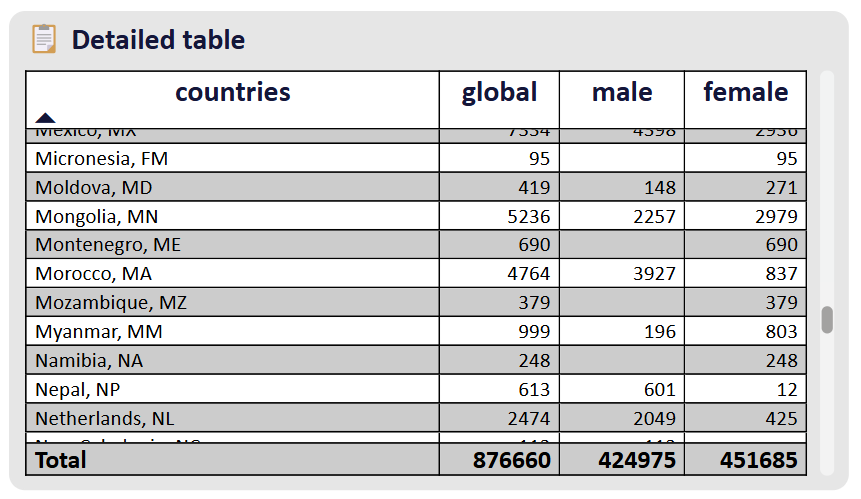
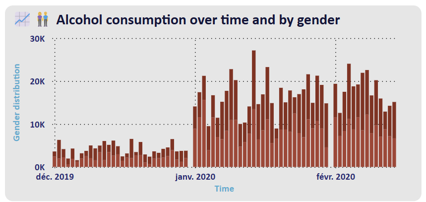

Consommation d'alcool dans le monde
PowerBI · PowerQuery · Kaggle
📊 Pendant les vacances, j'ai créé, sur un coin de table, un dashboard Power BI à partir d'un dataset disponible sur Kaggle. Celui-ci contient des données sur la consommation des populations, classées par genre, pays et date.
📁 Le dataset, assez petit et simple, ne permettait pas de réaliser des analyses très poussées. Cependant, j'ai enrichi les données en faisant du scraping pour y ajouter un nouveau paramètre : le nombre d'habitants de chaque pays présent dans le dataset. Cela m'a permis de créer une carte mondiale 🌍 affichant les pays les plus consommateurs d'alcool de manière proportionnelle à leur population.
✅ Au final, ce dashboard permet :
1️⃣ De rechercher un pays grâce à une barre de recherche pour afficher la consommation d'alcool par jour en fonction du genre.🔍
2️⃣ D'explorer les données en cliquant sur un pays depuis le tableau ou directement sur la carte du monde.🌟


